Home
Introducing the STEMAIDE kit
The STEMAIDE Kit is a comprehensive plug-and-play educational toolkit designed to inspire and empower young learners in Africa. It is specifically curated to promote STEM (Science, Technology, Engineering, and Mathematics) education and foster the development of critical skills, creativity, problem-solving abilities, and an entrepreneurial mindset.
The STEMAIDE kit includes a range of components and materials that allow you to engage in first-hand learning experiences and build over two hundred projects to explore various STEM concepts.
This guide helps you discover all the amazing things the STEMAIDE kit can do.
Getting started
To get started with your STEMAIDE kit, it is particularly important that you have some basic knowledge of ICT.
You will need a Laptop / PC, the Arduino IDE. Group learning is encouraged when you are using the STEMAIDE kit.
The Arduino IDE and Basic Set Up
Step 1: Double click on the Arduino IDE icon on your computer / laptop to open Arduino IDE.
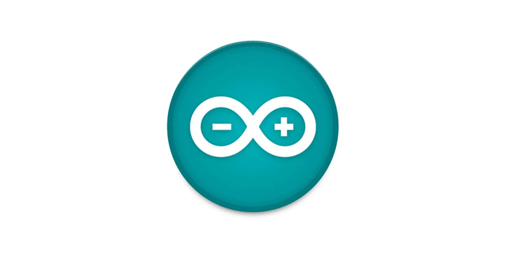
.Step 2: Find the three buttons in the top right corner of the window.
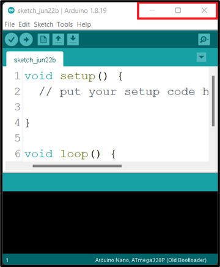
Step 3: Click the middle button "Maximize" in the top right corner of the window to maximize its size.
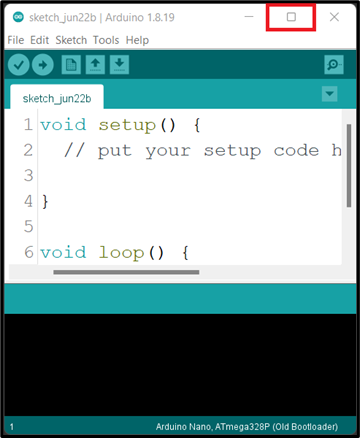
.At the point you should see the code below on your computer / laptop.
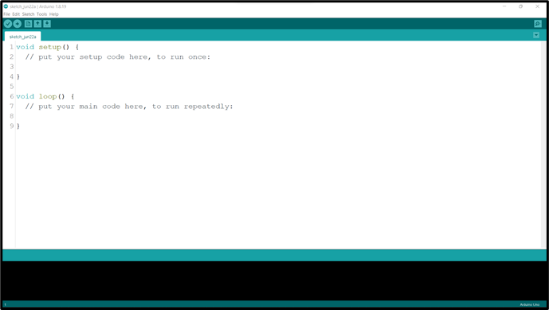
Step 4: Left Click before the ( void setup () ) and click on the Enter key on your keyboard to get space at the top of the void setup(). Then click above the void setup().
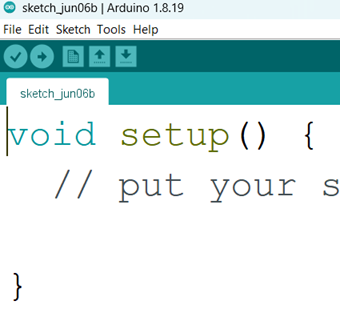 |
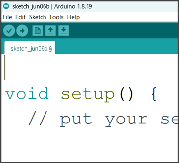 |
|---|---|
NB: we will write the necessary code and comment at the space we created above the void setup ().
Comment
In programming, a comment is a piece of text that is added to the source code of a program to provide information or explanations. Comments are intended for human readers and are ignored by the compiler or interpreter when the program is executed.
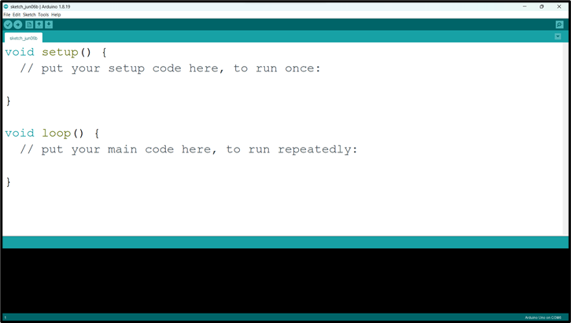
.NB: before you type a comment, type two slash (//) before you complete your sentence.
Step 1: Select the Board type. Click on tools on the menu bar hover your mouse on Board, a new window will appear. Look through and click on Arduino UNO.
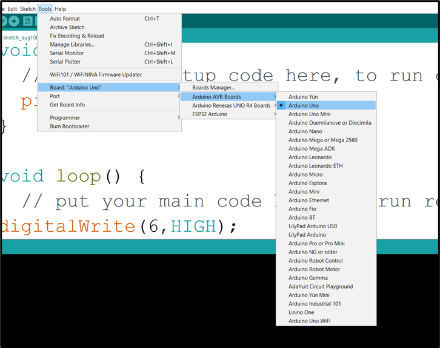
.Step 2: Select the Port.
Click on tools on the menu bar and hover your mouse on Port, a new window will appear. Look through and click on COM which has Arduino Uno attached to it.
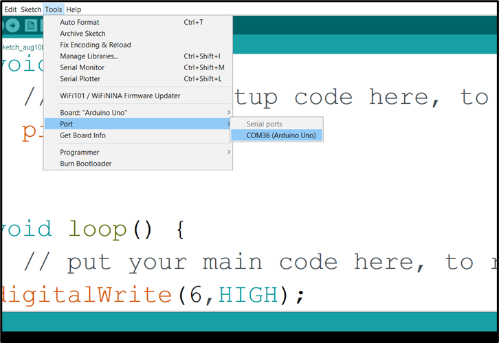
.NB: Your COM number may be different. In this example we have COM36 (Arduino Uno)
Step 3: Click Control S (CTRL S) on your keyboard or click Save on the Arduino task bar.
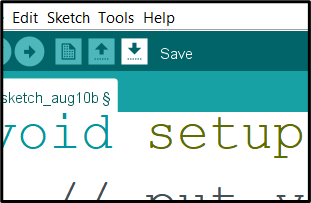
.A new window will pop up, type the project name and click save.
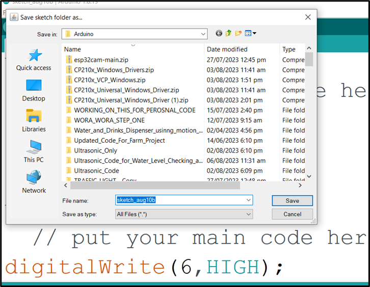
.Step 4: Click Verify.
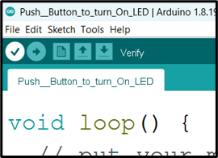
.Step 5: Click Upload.
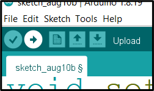
.NB: Make sure there is no error in your code and the Arduino USB cable is connected to your laptop / desktop before you click Upload.
WAIT Done uploading
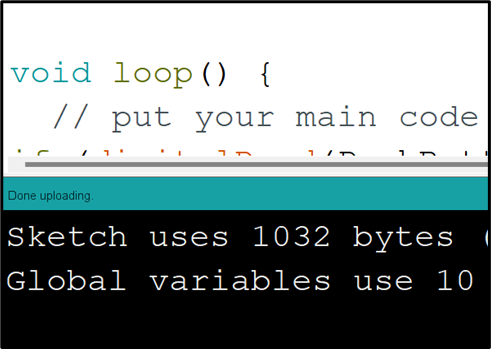
.